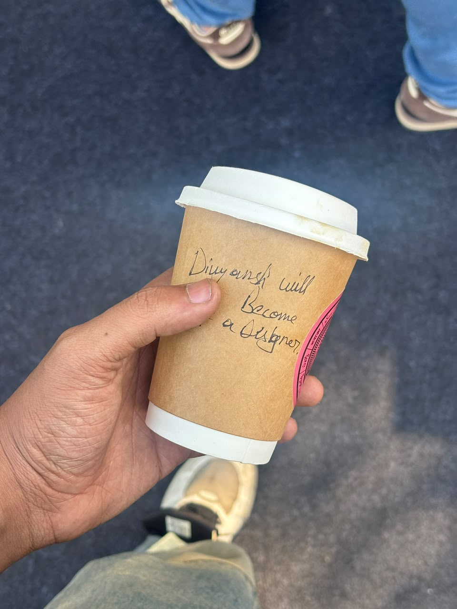

Divyansh Srivastava
M.Des at IIT Roorkee, B.FTech from NIFT, two years of work behind me. I build interfaces for people who have to make decisions out of numbers.
Last updated 02 — 08 — 2026
Product designer working through mathematics, data, psychology and the arts
Selected work
Eight projects — 2025 to 2026Internship & work
Five projects

Personal projects
Three projects
Worked with:
- Rare Rabbit
- ShopDeck
Studied fashion technology at NIFT. Now reading design at IIT Roorkee.
My life revolves around mathematics, data, psychology and the arts — the alchemy through which I become a product designer. Two years of corporate work across consulting and influencer marketing sat me next to the dashboards, and the problem was never the data. It was that nobody could read it.
Read more
Education
M.Des, Indian Institute of Technology Roorkee
25 — 27
B.FTech, National Institute of Fashion Technology
24
Experience — 2 years
ShopDeckProduct design
↗
Rare RabbitDesign
↗